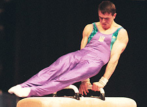

Alexander Beresch (UKR)
2000 Olympic AA Bronze
Medalist
2000 European AA Champion

Medal Total
Olympic Games: 1
Silver, 1 Bronze
World Championships: 1 Silver, 3 Bronze
European Championships: 2 Gold, 1 Bronze
World Cup: 1 Gold
Alexander was born on October 12, 1977 in Pervomaisk. He was killed in a car accident in Kiev on February 29, 2004.
Competition Results
1996
Kiev International: 7th AA
1997
DTB Cup: 5th PH, 8th HB
Intl. Hungarian Championships: 1st AA
Swiss Cup: 3rd HB, 4th PH
UKR Championships: 2nd AA, 1st FX, 1st V, 2nd HB
World Championships: 9th AA, 3rd HB
1998
European Championships: 5th AA
French International: 7th AA
Swiss Cup: 2nd HB, 3rd PH
UKR Championships: 1st PH
1999
3-on-3 International: 1st Team
American Cup: 7th AA
French International: 3rd AA
Gander Memorial: 2nd AA
Samboo Cup: 1st HB
University Games: 6th Team, 1st AA, 4th PH, 6th HB, 8th PB
World Championships: 8th AA, 4th PH
2000
Belarus Open: 3rd AA
Copa Gimnastica: 2nd AA, 1st PH, 1st PB, 1st HB, 3rd FX, 4th R, 6th V
Cottbus International: 2nd HB, 5th PH
DTB Cup: 1st HB, 2nd FX, 2nd PH, 2nd PB
European Championships: 1st AA, 1st HB, 3rd PH, 4th
PB, 6th FX
Gander Memorial: 4th AA
Olympic Games: 2nd Team, 3rd AA, 5th HB, 7th PH
Swiss Cup: 2nd AA
UKR Championships: 1st AA, 2nd PB
UKR Cup: 1st AA
World Cup: 1st HB, 4th PH
2001
American Cup: 4th AA
DTB Cup: 3rd HB, 4th FX
Gander Memorial: 6th AA
Glasgow Grand Prix: 3rd PH, 7th HB, 8th FX
Goodwill Games: 6th HB, 7th FX, 7th PH
Intl. of Boa Vista: 2nd AA
Swiss Cup: 8th AA
World Championships: 3rd Team, 2nd HB, 3rd PH, 8th FX
2002
American Cup: 8th AA
2003
Cottbus International: 5th PH
French International: 2nd HB, 4th V
NoyNoy Grand Prix: 1st HB
World Championships: 8th Team
This page was created on August
13, 2005.
© Gymn Forum